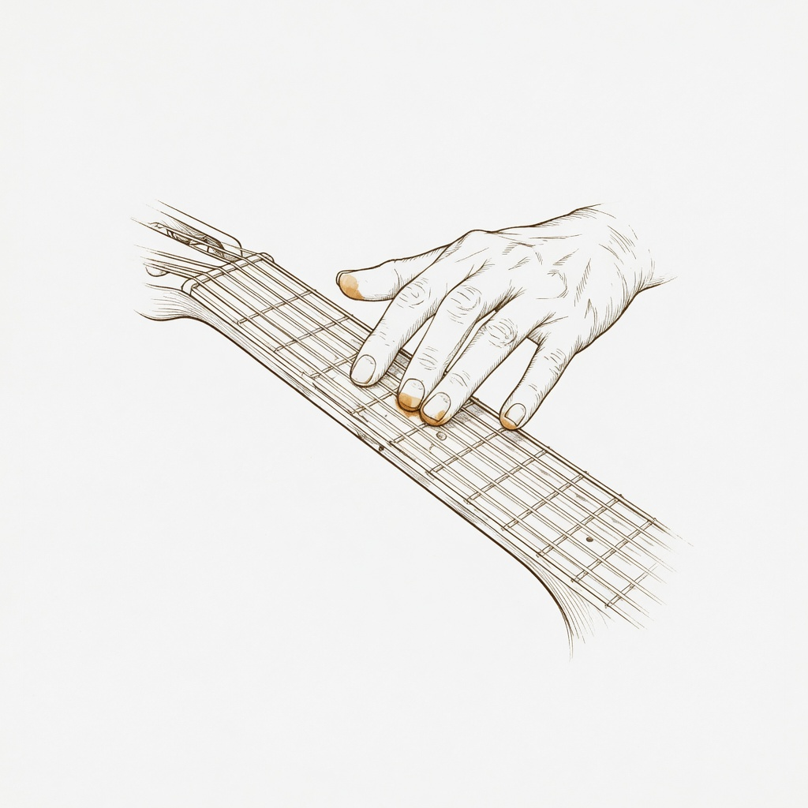

The Woodshed · Technique
Technique & Drills Library
Filter, expand the how-to, track what's in your rotation, and build a session.
All levels
Beginner
Intermediate
Advanced
In rotation only
Random drill
Today's session (
0
min)
Open metronome →
Mark all done
Clear session
All drills